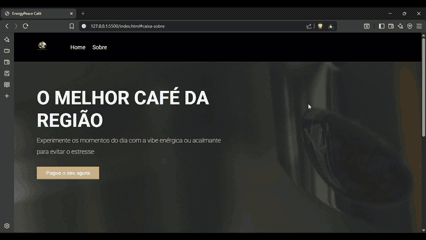
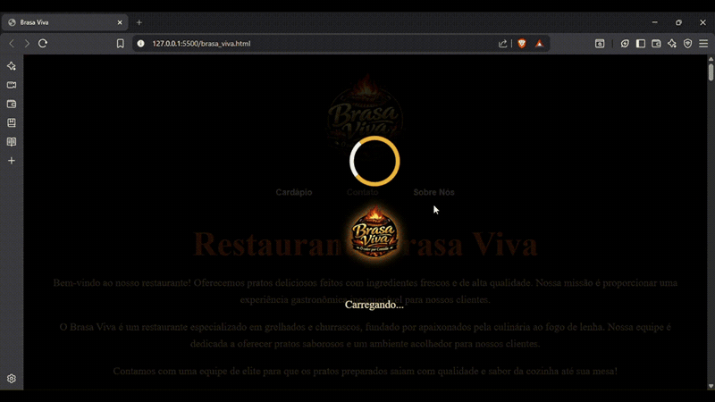

Sobre
Com um ano de background profissional iniciado como Jovem Aprendiz no RH, onde desenvolvi habilidades interpessoais e de organização, decidi direcionar minha carreira para a tecnologia. Atualmente, curso Gestão de TI e busco minha transição para o Desenvolvimento Web, com o objetivo final de me tornar Full-Stack. No front-end, possuo sólida experiência com HTML5, bons conhecimnetos em CSS3 e estou aprofundando minha proeficiência na manipulação do DOM com JavaScript.
Projetos
-
Coffe-Peace(energyPeace)

Coffe&Peace é uma aplicação web interativa que simula uma experiência digital de cafeteria, desenvolvida com foco em usabilidade, design moderno e performance. O projeto evidencia a capacidade de transformar conceitos visuais em interfaces funcionais, priorizando uma navegação intuitiva e uma experiência envolvente para o usuário.
Desenvolvido com HTML, CSS e JavaScript, aplica na prática conceitos de responsividade, manipulação eficiente do DOM e criação de interações dinâmicas, além de organização de código e boas práticas de front-end.
O projeto reforça habilidades essenciais como atenção à experiência do usuário (UX), estruturação de layouts e desenvolvimento de interfaces responsivas, demonstrando preparo para atuar em projetos reais e colaborativos.
-
Brasa Viva

Brasa Viva é uma aplicação web com temática de churrascaria, desenvolvida com foco em identidade visual forte, experiência do usuário e design responsivo. O projeto entrega uma interface envolvente e bem estruturada, destacando produtos de forma atrativa e com navegação fluida.
Construído com HTML e CSS, o projeto valoriza a criação de layouts modernos e responsivos, com atenção à organização visual, hierarquia de informações e estética. O JavaScript é utilizado de forma pontual na tela de carregamento, contribuindo para uma experiência inicial mais dinâmica.
O Brasa Viva evidencia a capacidade de desenvolver interfaces consistentes mesmo com uso mínimo de JavaScript, reforçando domínio em CSS, responsividade e construção de UI, além de atenção à experiência do usuário (UX) e aos detalhes visuais.